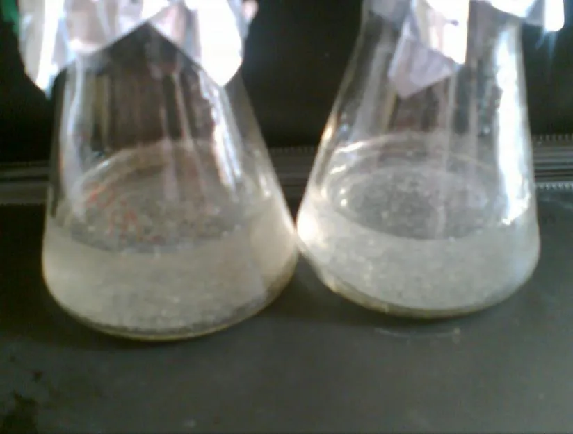
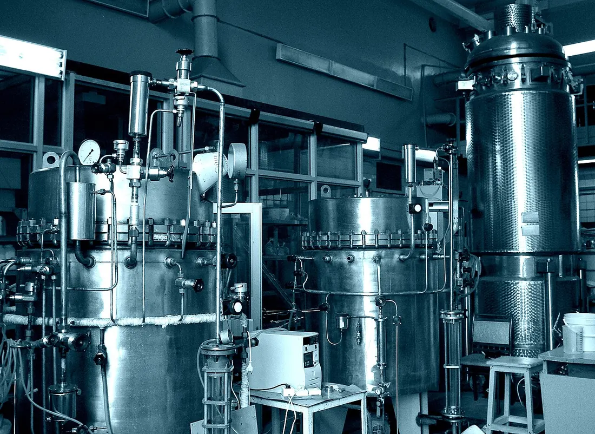

01Мета і план
Мета
Навчитися отримувати суспензійну культуру (окремі клітини та їх невеликі групи, що ростуть у рідкому середовищі) з калюсу, стежити за її ростом і оцінювати якість: щільність, життєздатність, ступінь агрегації та здатність одиночних клітин давати клони.
Знадобиться
- ламінар-бокс, шейкер (качалка) на 100–150 об/хв, колби Ерленмеєра;
- пухкий калюс женьшеню, моркви, топінамбура, гвоздики чи томатів;
- мікроскоп, камера Фукса — Розенталя або Горяєва, центрифуга;
- барвники: синій Еванса, 0,1 % метиленовий синій; 8 % оксид хрому(VI).
Ви дізнаєтеся
- чому суспензію треба постійно струшувати і як від цього залежить ріст;
- п'ять фаз кривої росту й коли робити пересів;
- як рахувати клітини за формулою X = M·N·1000/3,2;
- як відрізнити живі клітини від мертвих і дрібноагреговану суспензію від крупноагрегованої.
02Теоретичні відомості
Що таке суспензійна культура
Суспензійна культура — це одиночні клітини та їхні невеликі групи (агрегати), які ростуть у рідкому живильному середовищі і утворюють порівняно однорідну популяцію. Кожна клітина омивається середовищем, тому суспензія рівномірно відгукується на додані хімічні речовини — у цьому її головна перевага перед калюсом (неорганізованою масою клітин на агарі, див. тему 2).
Суспензію найчастіше отримують, переносячи шматочки пухкого (рихлого, такого, що легко розпадається) калюсу з агаризованого середовища в рідке: на 100 мл середовища беруть 2–3 г свіжого калюсу. Великі грудочки перед посівом відфільтровують або дають їм осісти. Можна виходити й безпосередньо з експлантату (шматочка листка, стебла, кореня), обробленого пектиназами — ферментами, що руйнують пектин міжклітинних пластинок (див. ферменти в Конспекті): спершу на поверхні утворюється калюс, а від нього відділяються клітини.
Колби з суспензією постійно струшують на шейкері (качалці) зі швидкістю 100–120 об/хв (у ЛР 18 — 130–150 об/хв): це аерує середовище (насичує киснем) і розбиває агрегати. У нерухомому середовищі клітини осідають, продовжують ділитися і знову утворюють калюс. Розпаданню на окремі клітини сприяють також виключення з середовища іонів Ca2+ і додавання пектинази: обидва заходи руйнують пектат кальцію — «клей» серединних пластинок клітинної стінки. Безперервний поділ підтримують ауксини й цитокініни — фітогормони, потрібні для індукції калюсу (ріст і фітогормони).



Ріст суспензії: п'ять фаз
Рослинні клітини діляться значно повільніше за клітини тварин чи мікроорганізмів: час подвоєння (td, доба, за яку число клітин зростає вдвічі) становить від однієї до трьох діб. Як і калюс, суспензія має S-подібну криву росту, у якій посібник виділяє п'ять фаз:
- лаг-фаза (латентна) — клітини пристосовуються до нового середовища й майже не діляться;
- експоненційна (логарифмічна) — число клітин подвоюється через рівні проміжки часу;
- лінійна — приріст за добу сталий: поділ уже обмежує не сама клітина, а надходження кисню чи живлення;
- стаціонарна — поживні речовини вичерпано, поділ зупинився, суха біомаса максимальна (зазвичай через 2–3 тижні);
- фаза загибелі — середовище виснажене, накопичуються продукти обміну, клітини гинуть і руйнуються.
В експоненційній фазі щільність клітин X (кл/мл) зростає за законом
де X0 — щільність після посіву, t — час, доби, μ — питома швидкість росту (частка приросту на одну клітину за добу).
Пасаж (період між пересівами) триває 14–16 діб; за цей час щільність зростає від 5·104 до 5·106 кл/мл, тобто в 100 разів (с. 86). В іншому місці посібник наводить середнє зростання «у 20 разів за 2–3 тижні» (с. 90) — обидві цифри узгоджуються, якщо взяти різну початкову щільність: максимум близько 5·106 кл/мл задає запас сахарози в середовищі, а кратність приросту залежить від того, скільки клітин посіяли. Інокулят (клітини для пересіву) беруть наприкінці експоненційної фази, ще до виходу на плато. Основні критерії росту — збільшення числа клітин, їхньої сирої та сухої маси.
Про модель. Посібник описує фази якісно. У моделі вони виникають з простих механізмів: експоненційний поділ (рівняння 1, td = 1,6–2,6 доби); лінійна ділянка — коли приріст обмежує подача кисню, що залежить від швидкості шейкера; стаціонарна — коли вичерпано 20 г/л сахарози (≈ 4·10−9 г на клітину, тож максимум ≈ 5·106 кл/мл); загибель — після кількох діб голодування. Це навчальне наближення, відкаліброване за числами посібника.
Як вирощують суспензії
Для суспензій здебільшого беруть ті самі середовища, що й для калюсу (у ЛР 18 — на солях Гамборга, тобто середовищі B5 за О. Гамборгом). Посібник називає три способи вирощування: 1) калюс на містках-підтримках із фільтрувального паперу, що звисають у рідке середовище; 2) накопичувальне (періодичне) культивування — клітини занурені в рідке середовище на качалках ротаційного або шейкерного типу; 3) безперервне культивування у культиваторах і ферментерах (біореакторах), де середовище перемішують механічно й продувають повітрям (барботаж).
Системи бувають закриті — свіже середовище не надходить до кінця вирощування (періодична культура) — і відкриті, де середовище періодично або постійно замінюють свіжим; разом зі зношеним середовищем відбирається і частина клітин. Промислові біореактори для рослинних клітин використовують, щоб отримувати вторинні метаболіти (речовини, не обов'язкові для життя клітини, але цінні для людини: алкалоїди, глікозиди женьшеню тощо).


Показники стану суспензії
Суспензію характеризують життєздатністю, щільністю (числом клітин в 1 мл), ступенем агрегації і швидкістю росту. Ріст оцінюють за об'ємом осаджених клітин (ООК — частка, яку займає осад після центрифугування 10 мл суспензії 5 хв при 2000 об/хв), числом клітин, сирою та сухою масою, вмістом білка чи ДНК, електропровідністю середовища. Суху масу визначають, висушуючи клітини на зваженому фільтрі при +60 °C до сталої маси.
Щільність: камера Фукса — Розенталя
Клітини рахують під мікроскопом у лічильній камері Фукса — Розенталя або Горяєва — товстому предметному склі з вигравіюваною сіткою, над якою притерте покривне скельце залишає шар рідини точно відомої глибини. Притирають доти, доки з'являться кільця Ньютона (райдужні смуги, що свідчать про щільне прилягання скла). Сітка камери Фукса — Розенталя — 16 великих квадратів по 1 мм2, розділених потрійними лініями; глибина — 0,2 мм. Звідси «постійна величина» формули:
Агрегати перед підрахунком мацерують (роз'єднують на окремі клітини): 1 мл суспензії змішують із 2 мл 8 % оксиду хрому(VI) (CrO3, у воді утворює хромову кислоту, яка гідролізує пектин серединних пластинок) і тримають 15 хв при +70 °C, потім суміш тричі пропускають через шприц із товстою голкою. Повне руйнування агрегатів дає пектиназа (0,25 % від об'єму). Клітини рахують у 5 великих квадратах — чотирьох по діагоналі та одному кутовому — і обчислюють щільність:
де X — число клітин в 1 мл суспензії; M — середнє число клітин у камері (на всі 16 квадратів, тобто в 3,2 мм3); n̄ — середнє число клітин в одному підрахованому великому квадраті; N — розведення (1 мл суспензії + 2 мл CrO3 ⇒ N = 3); 1000 — перерахунок мм3 у мл. Отже, X = n̄·N·5000 кл/мл. Приклад: n̄ = 67 ⇒ M = 1072, X = 1072·3·1000/3,2 ≈ 1,0·106 кл/мл.
Статистична похибка підрахунку визначається числом підрахованих клітин n: клітини розподіляються по квадратах випадково (за розподілом Пуассона — законом, за яким дисперсія числа подій дорівнює середньому), тому відносна похибка ≈ 1/√n. При 1000 клітин 95 %-ві межі становлять ±6 % — ось чому посібник вимагає вибірку щонайменше в 1000 клітин.
Життєздатність
Живу клітину від мертвої відрізняють за рухом цитоплазми, активністю ферментів і, найпростіше, за проникністю мембрани для барвників. Синій Еванса (ЛР 19) і метиленовий синій (ЛР 21) не проходять крізь непошкоджену плазмалему (зовнішню мембрану протопласта), що вибірково пропускає речовини; до того ж метиленовий синій у живій клітині відновлюється до безбарвної форми. У мертвих клітин мембрана стає проникною, і протопласт фарбується в синій колір. Суспензія вважається життєздатною, якщо незабарвленими залишаються 70 % одиночних клітин, а в агрегатах забарвлено менше 50 % клітин (с. 91).
Ступінь агрегації
Якість суспензії визначає її ступінь агрегації. Посібник розрізняє одиночні клітини, дрібні агрегати (не більше 10–12 клітин) і великі (понад 12 клітин) і три типи суспензій:
| Тип суспензії | Одиночні клітини | Дрібні агрегати | Великі агрегати |
|---|---|---|---|
| дрібноагрегована | 40 % | 60 % | — |
| середньоагрегована | 40 % | 40 % | 20 % |
| крупноагрегована | — | 40 % | 60 % |
Ознаки доброї суспензії — високий ступінь дезагрегації (5–10 клітин у групі), морфологічна однорідність (дрібні сферичні чи овальні клітини з густою цитоплазмою) і відсутність диференціації (перетворення на спеціалізовані клітини, зокрема трахеєподібні елементи з потовщеними стінками). Великі агрегати й рештки експлантату видаляють, фільтруючи (фракціонуючи) суспензію через марлеві, нейлонові чи металеві фільтри. Ступінь агрегації визначають, підраховуючи не менше 1000 клітин у кількох полях зору при збільшенні ×30; у моделі частки рахуються за кількістю об'єктів (одиночна клітина або агрегат = 1 об'єкт).
Одноклітинні клони
Клон — потомство однієї клітини. Висіваючи суспензію на тверде агаризоване середовище, отримують колонії-клони (мікрокалюси), з яких можна відбирати лінії з потрібними властивостями (див. тему 6 про клітинну селекцію). Для клонування найкраще брати клітини експоненційної фази, хоча придатні й клітини стаціонарної. Частку клітин, що дали колонії, називають ефективністю висіву:
Поодинокі клітини погано діляться, якщо їх мало: сусідні клітини «кондиціюють» середовище, виділяючи в нього регулятори росту та метаболіти, тому нижче певної критичної щільності ефективність висіву різко падає. Надто густий висів дає колонії, що зростаються в суцільний «газон». Модель показує цей компроміс (кількісні параметри — наближення).
Навіщо суспензії
Суспензійні культури — модельні системи для вивчення вторинного метаболізму, індукції ферментів, експресії генів (роботи гена з утворенням білка, див. молекулярну генетику) і розкладання чужорідних сполук. Перевага суспензій — здебільшого відсутність хлорофілу й каротиноїдів, відносна однорідність клітин, які легко піддаються дії хімічних речовин і ростуть у контрольованих стерильних умовах.
група клітин, що не розійшлися після поділу; дрібний — до 10–12 клітин, великий — понад 12.
прилад, платформа якого рухається по колу й безперервно струшує колби.
період вирощування між двома пересівами (субкультивуваннями) на свіже середовище; для суспензій 14–18 діб.
частина культури, яку переносять на свіже середовище.
роз'єднання клітин руйнуванням серединних пластинок (CrO3, пектиназа).
райдужні смуги між щільно притертими скельцями — ознака правильної глибини камери.
барвник, що не проникає крізь неушкоджену мембрану; фарбує лише мертві клітини.
об'єм осаджених клітин — частка об'єму суспензії, яку займає осад після центрифугування.
Усе це можна перевірити в інтерактивній моделі: криву росту — на вкладці «Шейкер і ріст», формулу (3) — на вкладці «Камера Фукса — Розенталя».
03Інтерактивна модель
Чотири вкладки відповідають лабораторним роботам. Почніть із колби на шейкері: оберіть культуру й умови, натисніть «▶ Запустити» — минуть 30 діб прискореного часу. Кнопка «Взяти пробу з колби» на інших вкладках переносить у них поточний стан культури.
Суспензія на шейкері та крива росту
Три колби по 100 мл середовища Гамборга на орбітальному шейкері, +24 °C, темрява (ЛР 18, с. 88).
Культура
Умови культивування
Крива росту (логарифмічна шкала), кольором — фази
Сахароза витрачається — суха маса клітин зростає
Лаг, експоненційна, лінійна, стаціонарна фази та загибель — див. теорію. ООК — об'єм осаджених клітин (10 мл суспензії, 5 хв при 2000 об/хв). Пухкий калюс розпадається легше, щільний дає крупні агрегати (ступінь агрегації). Мінімальна посівна доза й час подвоєння для кожного виду — навчальні наближення в межах посібника (1–3 доби).
Підрахунок клітин у камері Фукса — Розенталя
Мацерована суспензія (1 мл + 2 мл 8 % CrO3) у камері, збільшення ×30. «▶ Запустити» — модель рахує квадрат за квадратом.
Проба
Розведення N
Схема підрахунку
Клітин у кожному квадраті (розкид за Пуассоном)
Оцінка X уточнюється з кожною клітиною
Зелена позначка ✓ у лупі — клітину зараховано до квадрата (лежить усередині або на верхній/лівій межі), червоний × — на нижній чи правій межі, її зарахують сусідньому квадрату. λ — очікуване число клітин у квадраті об'ємом 0,2 мм³. Формула й пояснення — у теорії.
Життєздатність і ступінь агрегації
Крапля суспензії + крапля барвника під покривним скельцем. «▶ Запустити»: барвник просочується з краю скельця, потім клітини й агрегати підраховуються.
Барвник
Препарат
Склад препарату й класи агрегованості посібника, % об'єктів
Критерії життєздатності (с. 91)
Мертва клітина має стиснений зернистий протопласт; барвник забарвлює його в синій. Жива — прозора вакуоля, пристінна цитоплазма з тяжами, ядро з ядерцем. Підрахунок охоплює 3 препарати × 3 поля зору (ЛР 21), тобто понад 1000 клітин. Див. життєздатність і агрегацію.
Висів суспензії на агар і одноклітинні клони
0,5 мл суспензії висівають у чашку Петрі на агаризоване середовище Гамборга з кінетином і НОК (с. 92). «▶ Запустити» — 28 діб після висіву.
Суспензія
Розведення перед висівом
Фаза росту клітин
Ефективність висіву залежить від щільності
Коли колонії зростуться?
НОК — α-нафтилоцтова кислота, синтетичний ауксин; кінетин — цитокінін. Площа агару в чашці Ø 90 мм — 63,6 см². Критична щільність (≈ 20 кл/см²), ефективність висіву (до 32 %) і швидкість росту колоній — навчальні наближення; посібник дає лише якісні закономірності (клонування). Колонія з агрегату — не клон: вона походить від кількох клітин.
04Хід лабораторних робіт
Робота 18. Отримання суспензійної культури з калюсу женьшеню, моркви, топінамбура, гвоздики, томатів с. 87–89
Мета: отримати клітинну суспензію з калюсних тканин. Обладнання: ламінар-бокс, ланцети, пінцети, спиртівка, чашки Петрі, живильне середовище, калюс Panax ginseng C. A. Mey., Daucus carota L., Helianthus tuberosus L., Dianthus caryophyllus L., Solanum lycopersicum L.
- У ламінар-боксі шматочки пухкого калюсу переносять у колбу з рідким середовищем (2–3 г на 100 мл). Склад на 1 л: макросолі Гамборга — 100 мл, мікросолі Гамборга — 1 мл, Fe-хелат — 5 мл, вітаміни МС (за Мурасіге — Скугом) — 1 мл, гідролізат казеїну — 500 мг, кінетин — 2 мг, сахароза — 20 г, вода — 865 мл. (У переліку посібника є й «агар 8 г», але для рідкого середовища суспензії агар не додають.)
- Колби вирощують на качалці ротаційного або шейкерного типу: 130–150 об/хв, +23–24 °C, абсолютна темрява.
- Через 10–14 діб суспензію фільтрують через нейлонову тканину.
- Фільтрат ділять на 3 порції у плоскодонні колби, доливають свіжого середовища до 100 мл.
- Колби знову ставлять на шейкер; субкультивують кожні 14–18 діб.
- Спостерігають за ростом суспензій різних видів і роблять висновки.
Робота 19. Визначення параметрів росту клітинної суспензії с. 89–90
Обладнання: міні-центрифуга з бакет-ротором (ротором з відкидними стаканами), центрифужні пробірки, мікроскоп, камера Фукса — Розенталя, фільтрувальний папір, чашки Петрі.
- Об'єм осаджених клітин: 10 мл суспензії в пробірці на 15 мл центрифугують 5 хв при 2000 об/хв; об'єм осаду виражають у відсотках.
- Число клітин — за методом Брауна (ЛР 13, тема 3) або за ЛР 20.
- Сира маса: суспензію фільтрують через зволожений зважений фільтр, промивають дистильованою водою і знову зважують; різниця — сира маса клітин. Суха маса: клітини на попередньо зваженому сухому фільтрі висушують у термостаті при +60 °C до сталої маси.
- Життєздатність: у чашку Петрі вносять 1 мл суспензії й 1–2 краплі синього Еванса; при малому збільшенні (×30) рахують живі незабарвлені клітини в полі зору.
Робота 20. Визначення щільності суспензійної культури та оцінка її ростової активності с. 90–91
- Колбу струшують і відбирають піпеткою кілька мілілітрів суспензії.
- 1 мл суспензії змішують із 2 мл 8 % оксиду хрому і ставлять у термостат на 15 хв при +70 °C.
- Суміш тричі пропускають через шприц із товстою голкою.
- Камеру Фукса — Розенталя (Горяєва) заповнюють, притираючи покривне скельце до появи кілець Ньютона; надлишок рідини прибирають фільтрувальним папером.
- При збільшенні ×30 рахують клітини в 5 великих квадратах: 4 по діагоналі й 1 кутовому.
- Щільність обчислюють за формулою X = M·N·1000/3,2 (формула 3).
- Визначення повторюють щодоби протягом усього пасажу.
- Будують криву росту.
Робота 21. Визначення ступеня агрегації та життєздатності клітинної суспензії с. 91–92
Матеріали: мікроскоп, 0,1 % метиленовий синій, дистильована вода, предметні й покривні скельця, стерильні піпетки, марлеві серветки, фільтрувальний папір.
- Струшують суспензію і стерильною піпеткою відбирають невелику пробу.
- Краплю суспензії на предметному склі змішують із краплею барвника, накривають покривним скельцем, надлишок рідини прибирають папером.
- При ×30 рахують клітини й агрегати у трьох полях зору (щонайменше три препарати).
- Один препарат замальовують і описують морфологію клітин (форму, розмір, забарвлення).
- Роблять висновок про ступінь агрегації (які фракції переважають, %) і життєздатність (незабарвлені клітини, %).
Робота 22. Висів клітинних суспензій на тверде агаризоване середовище для отримання одноклітинних клонів с. 92
- Стерильною піпеткою відбирають 0,5 мл життєздатної суспензії (з листків гвоздики, бульб топінамбура, картоплі).
- Висівають у чашки Петрі на середовище (на 1 л): макросолі Гамборга — 100 мл, мікросолі — 1 мл, Fe-хелат — 2 мг, вітаміни за Уайтом — 1 мл, мезоінозит — 100 мг, гідролізат казеїну — 500 мг, кінетин — 0,25 мл, НОК (α-нафтилоцтова кислота) — 2 мл, сахароза — 20 г, агар — 20 г, вода — 860 мл; pH 5,6–5,8.
- Культивують і стежать за появою колоній-клонів (див. рис. 10 вище).
05Контрольні питання
Чим суспензійна культура відрізняється від калюсної і чому її треба безперервно струшувати?
Суспензія — окремі клітини й дрібні агрегати в рідкому середовищі, калюс — суцільна маса клітин на агарі. Струшування аерує середовище й розбиває агрегати; без нього клітини осідають і знову утворюють калюс.
Які заходи сприяють розпаданню калюсу на окремі клітини?
Пухкий вихідний калюс, перемішування 100–150 об/хв, виключення Ca2+ із середовища та пектиназа, які руйнують пектат кальцію серединних пластинок; фільтрування від великих агрегатів.
Назвіть фази росту суспензії. Коли беруть інокулят для пересіву?
Лаг, експоненційна, лінійна, стаціонарна, загибель. Інокулят беруть наприкінці експоненційної фази (на 14–16 добу), до виходу на плато.
Поясніть кожен множник у формулі X = M·N·1000/3,2.
M — середнє число клітин у камері (16 квадратів), N — розведення (3 при 1 мл + 2 мл CrO3), 1000 — мм3 → мл, 3,2 мм3 — об'єм камери (16 мм2 × 0,2 мм). Якщо підраховано середнє на один квадрат, то M = n̄·16.
Навіщо суспензію мацерують перед підрахунком?
Клітини в агрегатах неможливо точно порахувати; хромова кислота (8 % CrO3, +70 °C, 15 хв) або пектиназа руйнують серединні пластинки й роз'єднують клітини.
Чому підраховують не менше 1000 клітин?
Число клітин у квадраті випадкове (розподіл Пуассона), відносна похибка ≈ 1/√n; при 1000 клітин вона близько 3 % (±6 % для 95 %-го інтервалу).
На чому ґрунтується визначення життєздатності синім Еванса? Яка суспензія вважається життєздатною?
Неушкоджена плазмалема не пропускає барвник, мертві клітини фарбуються в синій. Життєздатна — якщо незабарвлені ≥ 70 % одиночних клітин, а в агрегатах забарвлено менше 50 % клітин.
Охарактеризуйте дрібно-, середньо- і крупноагреговану суспензії.
40 % одиночних + 60 % дрібних; 40 % + 40 % + 20 % великих; 40 % дрібних + 60 % великих агрегатів (дрібні — до 10–12 клітин).
Чому надто рідкий висів суспензії на агар дає мало колоній, а надто густий — не дає клонів?
Поодинокі клітини не кондиціюють середовище й не діляться (нижче критичної щільності); при густому висіві колонії зростаються, і окремий клон від однієї клітини не виділити.
06Література
- Мельничук, М. Д., & Кляченко, О. Л. (2014). Біотехнологія в агросфері: навчальний посібник (с. 85–92). НУБіП України.
- Бутенко, Р. Г. (1999). Биология клеток высших растений in vitro и биотехнологии на их основе. ФБК-Пресс.
- Gamborg, O. L., Miller, R. A., & Ojima, K. (1968). Nutrient requirements of suspension cultures of soybean root cells. Experimental Cell Research, 50(1), 151–158. https://doi.org/10.1016/0014-4827(68)90403-5
- Bergmann, L. (1960). Growth and division of single cells of higher plants in vitro. Journal of General Physiology, 43(4), 841–851. https://doi.org/10.1085/jgp.43.4.841
- Gaff, D. F., & Okong'o-Ogola, O. (1971). The use of non-permeating pigments for testing the survival of cells. Journal of Experimental Botany, 22(3), 756–758. https://doi.org/10.1093/jxb/22.3.756
- Mustafa, N. R., de Winter, W., van Iren, F., & Verpoorte, R. (2011). Initiation, growth and cryopreservation of plant cell suspension cultures. Nature Protocols, 6(6), 715–742. https://doi.org/10.1038/nprot.2010.144